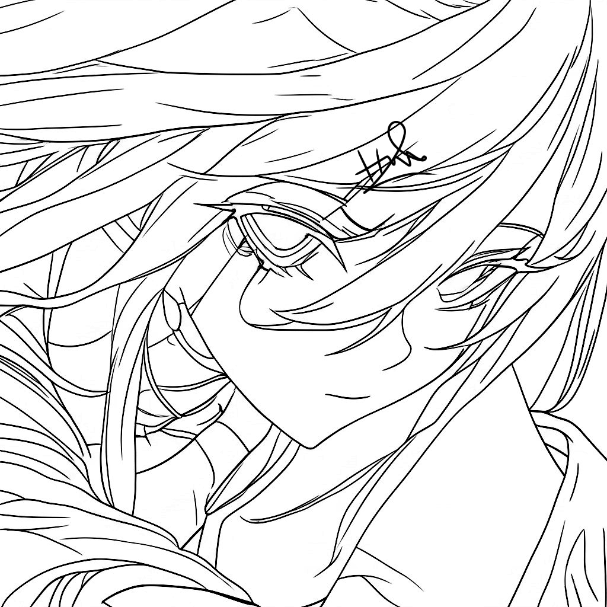

Tentang ZeroStream
Streaming anime subtitle Indonesia, real-time, tanpa iklan — dibuat dengan dedikasi oleh seorang siswa SMK dari Maluku Tengah.
Live Statistics
Creator & Founder

Hizkia Letwar
SMK Negeri 1 Maluku Tengah - TJKTTentang Platform
Misi
Menyediakan streaming anime subtitle Indonesia tanpa iklan, real-time, dan dapat diakses semua kalangan.
Motivasi
Hobi menonton anime dan keinginan belajar coding yang membara. ZeroStream adalah wadah belajar sekaligus karya nyata.
Open Source
Seluruh kode tersedia di GitHub. Siapa pun bisa berkontribusi atau mempelajari arsitektur real-time WebSocket + SQLite.
Hosting & Domain
Dideploy menggunakan PM2 + VPS pribadi, dengan database SQLite dan scheduler otomatis.
Teknologi & Arsitektur
| Teknologi | Keunggulan | Alasan Pilihan |
|---|---|---|
| Node.js + Express | Non-blocking I/O, ringan | Ideal untuk real-time dan scraping |
| SQLite (WAL) | Portable, ACID, cepat | Tanpa server terpisah, cocok untuk single-instance |
| WebSocket (ws) | Real-time, low latency | Broadcast episode baru ke semua client |
| Axios + Cheerio | Scraping adaptif | Update otomatis dari nimegami.id |
| Vanilla JS + CSS | Tanpa framework, performa maksimal | Kontrol penuh, bundle kecil |
Fitur Premium
Real-time Feed
Notifikasi episode baru via WebSocket
Scraper Otomatis
Update setiap 10 menit, tanpa intervensi manual
Bookmark & History
Simpan anime favorit dan lanjutkan episode
Dark/Light Theme
Transisi mulus, nyaman di mata
Responsive Premium
Grid / List view, mobile first
Statistik Live
Total anime, episode, ongoing, complete